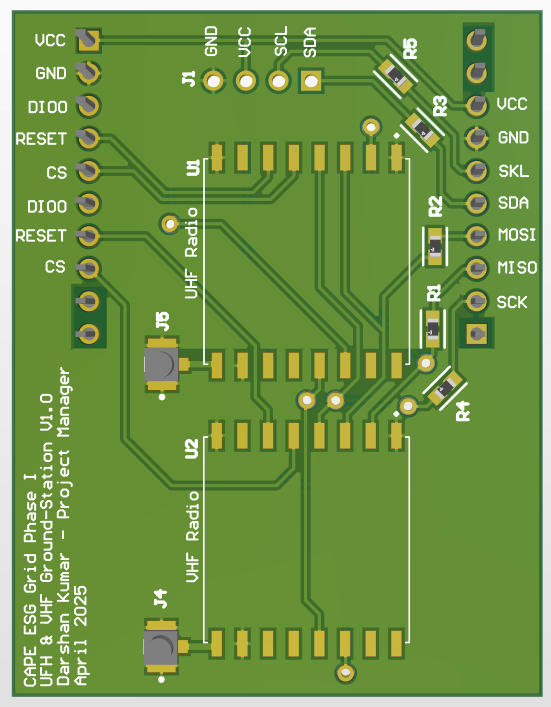
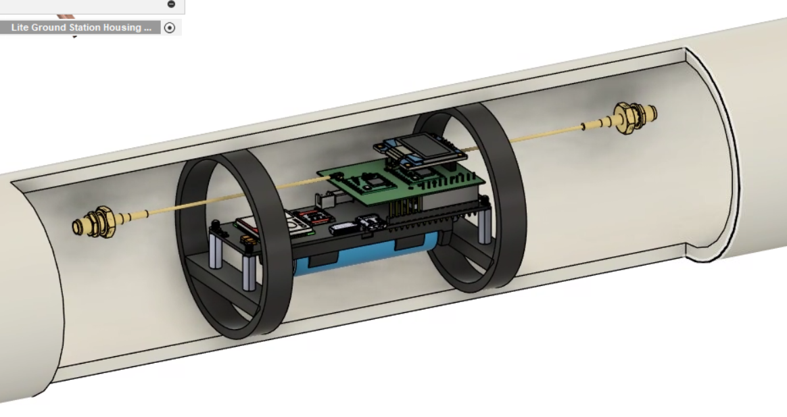
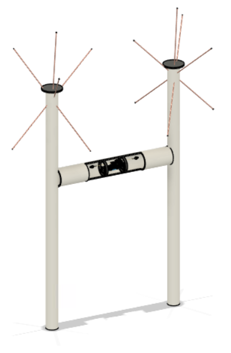
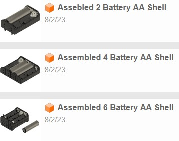
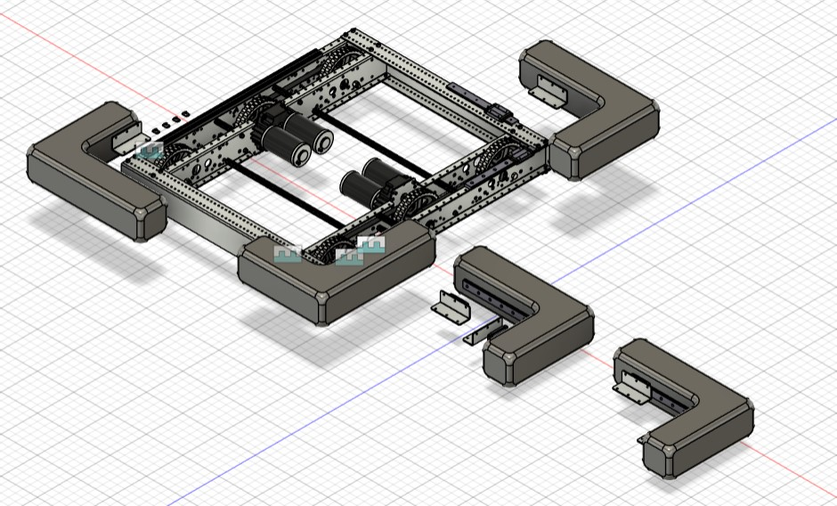
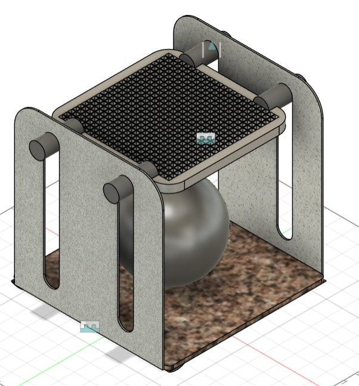
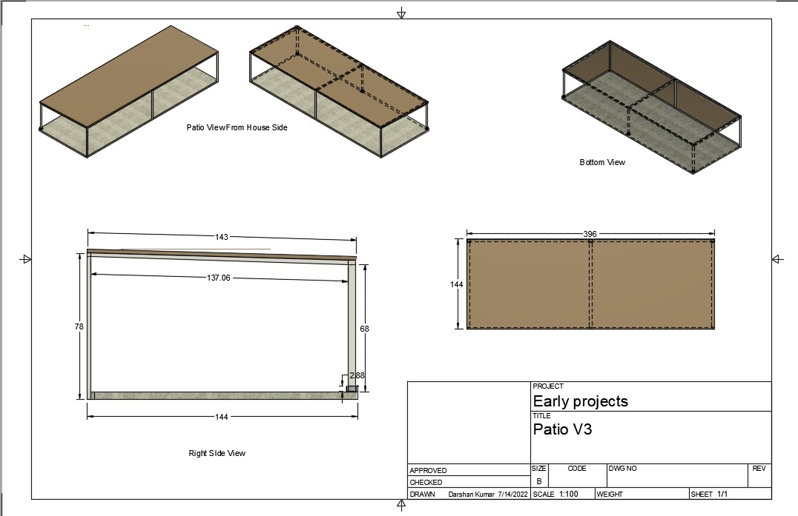

My Webpages
Personal Projects:
CAPE ESG Ground Station — UHF/VHF Radio PCB
As Project Manager for CAPE's cubesat ground station network, I designed and led the development of a custom dual-radio PCB (UHF & VHF) that interfaces as a hat on top of an ESP32 microcontroller. The board was integrated into a deployable ground station housing and successfully used during a live rocket launch to demonstrate over-the-air communication with the payload.



CAD:



